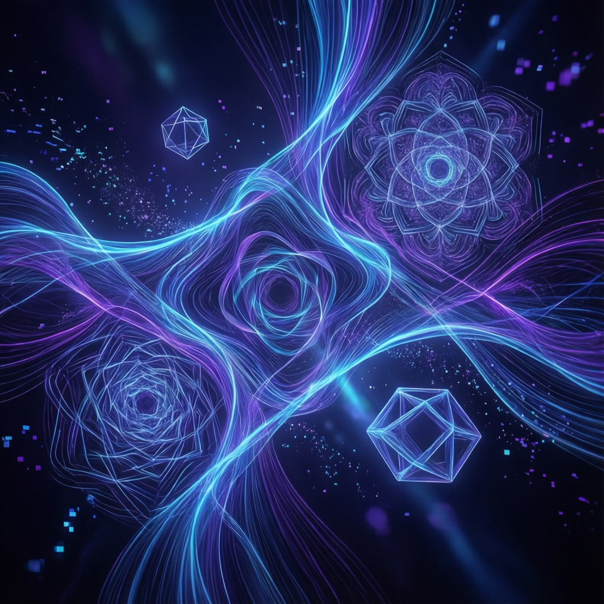

DELEGATE-52 研究揭示：即使最強模型平均也會腐蝕 25% 文檔內容

即使是最強的前沿模型（Gemini 3.1 Pro、Claude 4.6 Opus、GPT 5.4），在長 workflow 結束時平均腐蝕 25% 的文檔內容。每次 LLM 處理都會導致訊息損失和扭曲。
研究人員模擬了 52 個專業領域的長 delegation workflow，包括 coding、crystallography、music notation 等，測試 19 個 LLM 的表現。
「LLM 是最複雜的猜測機器。這讓它既無用又取決於如何使用。」
— Hacker News 社羣「LLM 是均值回歸機器——越偏離訓練數據的內容，越容易被拉向平均。」
— 另一位資深開發者這個問題的絕佳比喻是 JPEG 圖片壓縮：
只讓 LLM 做小範圍精確編輯，而非整個文檔來回處理。現代 coding agent 使用專門工具（如 str_replace）避免整個文件來回。
確定性數據通過 LLM 處理前先驗證，LLM 只輔助寫作而非數據處理。避免把 AI 當成「電話遊戲」的中間人。
使用 git diff 追蹤 LLM 的變更，並手動審查每次修改。這是應對 LLM 不可預測性的最佳防線。
讓 LLM 研究獨立的 markdown 文件，最後再組裝成文檔。類似於軟體開發中的關注點分離原則。
研究也受到質疑：
但核心問題依然存在：每次 LLM 處理都會導致一定程度的訊息損失。
LLM 是強大的工具，但也有其固有的侷限性。每次處理都會引入「entropy」—— 就像每次複印機複印都會略微降 quality。了解這些限制並採取適當的防範措施，是在工作流程中有效使用 AI 的關鍵。